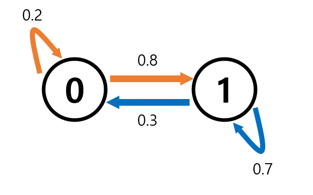
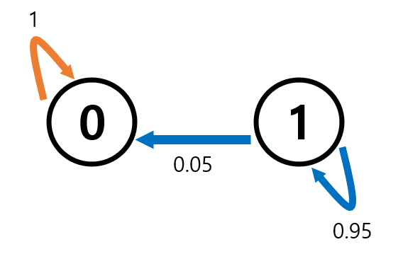
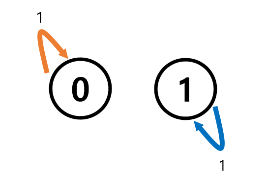
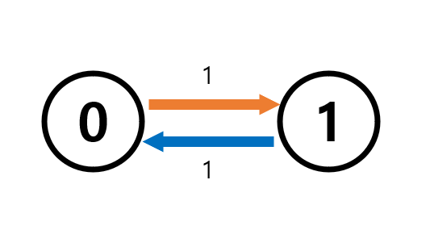

Autosaving every 20 seconds이번 포스팅에서는 stationary distribution과 HMC의 여러가지 특징들을 살펴본다.
The Stationary Distribution of an HMC
Definition of stationary distribution
다음과 같은 식을 만족하는 distribution \(\boldsymbol{\mu}\)를 stationary distribution이라고 한다.
\[\boldsymbol{\mu}^T = \boldsymbol{\mu}^TP\]
- 또한 \(\boldsymbol{\mu}\)가 stationary distribution이라면 보통 \(\pi\)로 표기합니다.(저도 그렇게 하려구요.ㅎㅎ)
Example-1
- 지난번에 했던 특징들을 여러가지 HMC에서 살펴보자.
- 먼저 아래와 같은 Markov Chain이다.

- P는 아래와 같다.
- \(\text{lim}_{t\to\infty}{\bf{P}}^n = {\bf{P}}^★\)로 수렴하는가? \(\to\) Yes!
- \({\bf{P}}^★\)의 모든 row가 동일한가? \(\to\) Yes!
array([[0.27272727, 0.72727273],
[0.27272727, 0.72727273]])- 초기분포가 뭐던지 \(X_\infty\)의 분포는 항상같으며 \(P^★\)의 row이다. \(\to\) Yes!
- 시간이 좀 지나면 나오는 결과들은 동일한 확률분포에서 결정된다.(오…신기한 사실이다.)
- 그리고 그 분포는 \({\bf{P}}\)를 무한번 거듭제곱 해보면 알 수 있다.
(array([0.27272727, 0.72727273]), array([0.27272727, 0.72727273]))- \(\text{row vector}_{{\bf{P}}^★} \times P = \text{row vector}_{{\bf{P}}^★}\)이다. \(\to\) Yes!
- 한 가지 더 알 수 있는 사실 \(\to\) \(\text{row vector}_{{\bf{P}}^★}\)는 정상분포의 정의를 만족하기에 HMC의 stationary distribution \(\pi^T\)이다..!
- 초기분포 \({\boldsymbol{\mu_0}} = \pi\)라면 \(\{X_t\}_{t\geq0}\)는 모두 동일한 분포를 가진다. \(\to\) Yes!
[0.27272727 0.72727273] [0.27272727 0.72727273] [0.27272727 0.72727273]- 이전에 짚어봤던 특징들이 전부 다 성립한다.
Example-2(흡수상태)
- 흡수상태가 존재하는 Markov Chain을 고려해보자.
- 어떤 상태에 들어가게 되면 다른 상태로 못빠져나감!

- \(\text{lim}_{t\to\infty}{\bf{P}}^n = {\bf{P}}^★\)로 수렴하는가? \(\to\) Yes!
- \({\bf{P}}^★\)의 모든 row가 동일한가? \(\to\) Yes!
- 초기분포가 뭐던지 \(X_\infty\)의 분포는 항상같으며 \(P^★\)의 row이다. \(\to\) Yes!
- 이 경우도.. 결국 시간이 지나면 같은 분포에서 sampling된다.
(array([1., 0.]), array([1., 0.]))- \(\text{row vector}_{{\bf{P}}^★} \times P = \text{row vector}_{{\bf{P}}^★}\)이다. \(\to\) Yes!
- 한 가지 더 알 수 있는 사실 \(\to\) \(\text{row vector}_{{\bf{P}}^★}\)는 정상분포의 정의를 만족하기에 HMC의 stationary distribution \(\pi^T\)이다..!
- 초기분포 \({\boldsymbol{\mu_0}} = \pi\)라면 \(\{X_t\}_{t\geq0}\)는 모두 동일한 분포를 가진다. \(\to\) Yes!
[0. 1.] [1. 0.] [0. 1.]- 이전에 살펴봤던 특징들이 전부 다 성립한다.
- 오잉? 그냥 모든 \({\bf{P}}\)에서 다 True인듯한 느낌인데…?
Example-3(단위행렬)
- 지금까지 본 특징들은 거의 다 성립하는 듯한 느낌
- 근데 여기서는 아니다.
- \(\bf{P}\)가 단위행렬의 경우를 보자.

\(\text{lim}_{t\to\infty}{\bf{P}}^n = {\bf{P}}^★\)로 수렴하는가? \(\to\) Yes!
\({\bf{P}}^★\)의 모든 row가 동일한가? \(\to\) No!
- 단위행렬의 곱은 단위행렬,모든 row가 동일하지 않음!
- 초기분포가 뭐던지 \(X_\infty\)의 분포는 항상같으며 \(P^★\)의 row이다. \(\to\) No,NA
- 이 경우 초기분포에 따라 \(X_{\infty}\)의 분포가 정해진다.
- cf. 앞선 경우들은 초기분포에 관계없이 궁극적으로 \(X_{\infty}\)의 분포는 동일했었다.
- P_star의 row가 모두 동일하지 않다.
- 이 경우 초기분포에 따라 \(X_{\infty}\)의 분포가 정해진다.
- \(\text{row vector}_{{\bf{P}}^★} \times P = \text{row vector}_{{\bf{P}}^★}\)이다. \(\to\) NA!
- 질문의 답이 불가능함. 애초에 \(P^★\)의 row가 모두 달라서 임의의 row vector를 가져오기가 불가능하다.
- \(\text{row vector}_{{\bf{P}}^★}\)가 아예 정해지지 않으므로 다른 질문을 해보자.
4-1.\(\boldsymbol{\mu} P = \boldsymbol{\mu}\)가 성립하는 벡터 \(\mu\)가 존재하는가? \(\to\) Yes!
- P는 단위행렬이므로 어떤 벡터 \(\boldsymbol{\mu}\)던지 당연히 성립한다!
- 따라서 어떠한 분포든지 정상분포의 정의를 만족하며 정상분포이다.(위에서 나온 결과와 일치한다.!)
- 초기분포 \({\boldsymbol{\mu_0}} = \pi\)라면 \(\{X_t\}_{t\geq0}\)는 모두 동일한 분포를 가진다. \(\to\) Yes!
- \(P = I\)이므로 당연하다.
Example-4(주기가 있을 때)

- \(\text{lim}_{t\to\infty}{\bf{P}}^n = {\bf{P}}^★\)로 수렴하는가? \(\to\) No!
- 앞선 경우들과 다르다. 애초에 수렴조차 하지 않는다.
- \({\bf{P}}^★\)의 모든 row가 동일한가? \(\to\) NA!
- 애초에 수렴하질 않기에 따질 수 없음.
- 초기분포가 뭐던지 \(X_\infty\)의 분포는 항상 같으며 \(P^★\)의 row이다. \(\to\) No,NA
- 위의 예시와 같이 초기분포에 따라서 \(X_\infty\)의 분포가 변하기 때문에 No
- P_star의 row가 모두 동일하지 않으므로 애초에 따질 수 없음 NA
- \(\text{row vector}_{{\bf{P}}^★} \times P = \text{row vector}_{{\bf{P}}^★}\)이다. \(\to\) NA!
- 질문의 답이 불가능함.(NA)
- \(\text{row vector}_{{\bf{P}}^★}\)가 아예 정해지지 않으므로 다른 질문을 해보자.
4-1.임의의 vector \(\mu\)에 대하여 \(\boldsymbol{\mu} P = \boldsymbol{\mu}\) 인가? \(\to\) No!
- \(\mu^T = \begin{bmatrix}0.5& 0.5\end{bmatrix}\)라 해보자.
- 초기분포 \({\boldsymbol{\mu_0}} = \pi\)라면 \(\{X_t\}_{t\geq0}\)는 모두 동일한 분포를 가진다. \(\to\) Yes!
[0.5 0.5] [0.5 0.5] [0.5 0.5]- 음? 정상분포가 안 존재하는 예시는 없네?
Thm
finite State Space를 가지는 HMC는 정상분포가 최소 1개는 존재한다.
- 증명은 생략..(안 알려주셨어요 …ㅎ)
정리
- HMC에는 여러가지 상태들이 존재하며 상태마다 나타나는 특징들이 다르다.
- 특히 state space가 유한한 경우 stationary distribution이 최소 1개는 존재한다.